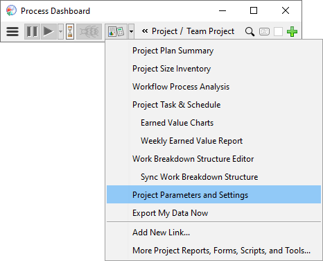
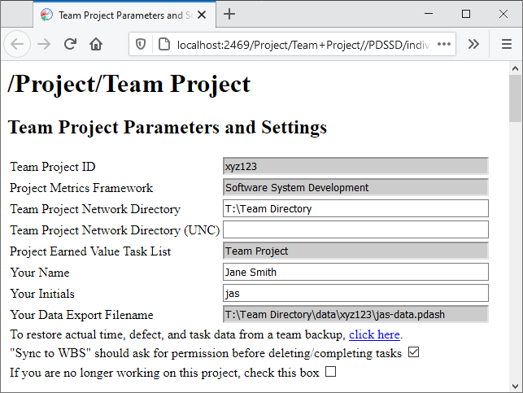

Once the team plan is created and balanced, you can copy the data in this plan to create plans for each team member. For simplicity, it is best to wait until the team is satisfied with the balanced plan before proceeding to this step. The team leader should save the work breakdown structure (using the Save option on the File menu of the Work Breakdown Structure Editor), and then have each team member perform the steps below. (If any project tasks were assigned to the team leader, then the team leader should perform the steps below as well.)
Before an individual can follow the instructions below, they must have already installed the Process Dashboard and joined the team project. If a particular team member has not yet performed these steps, they must accomplish them first before they can follow the steps below.
On your personal computer, start the Process Dashboard. Use the hierarchy menus to navigate to the team project. Then click the down-arrow to the right of the script button, and choose Edit Project Parameters and Settings.

The Team Project Parameters and Settings page will appear in your web browser. Find the text field containing your initials. Double-check to ensure that these initials match the ones assigned to you during the previous team-planning meeting.

If the initials do not match, you must take one of the following corrective actions:
After ensuring that your initials match, return to your main dashboard window, click the down-arrow to the right of the script button, and choose Sync Work Breakdown Structure.
Then wait while the dashboard copies data from the team plan.

If this is the first time you have synchronized and you see a message, "Your hierarchy is up to date - no changes were necessary," then your initials most likely do not match the initials in the team plan. Return to the first step above, and follow the instructions carefully.
Return to your Process Dashboard window. From the script button drop-down menu, choose Open Earned Value Task and Schedule. Your personal schedule will be displayed.

The top half of this window shows a list of tasks assigned to you. Review this list of tasks to ensure that it appears correct.
The bottom half of the window shows your personal schedule. Each row shows a particular week on the calendar. The Planned Time (PT) column shows the number of hours you might be able to spend on productive project work each week. Review this information to ensure that it appears correct. If any changes are necessary, make the appropriate edits and click the Save button. You can then close the Task and Schedule window if you wish.
Finally, return to your Process Dashboard window. Click the down-arrow to the right of the script button, and select the Export My Data Now option.